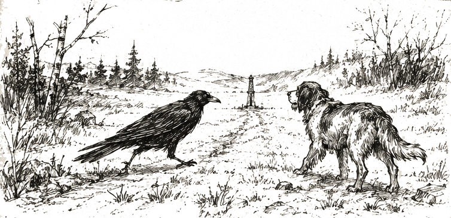
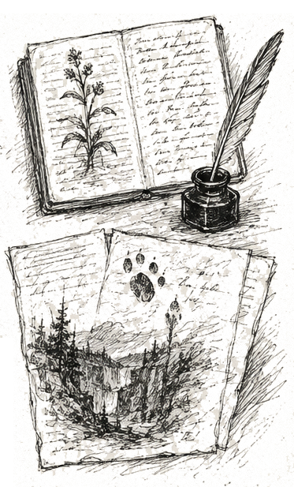
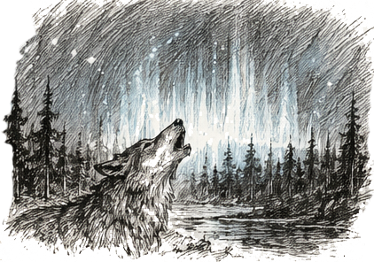
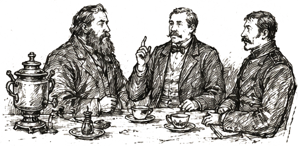
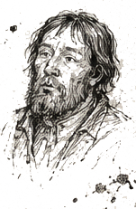
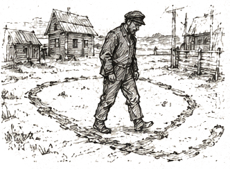
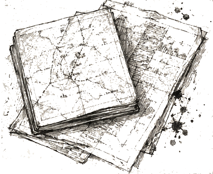
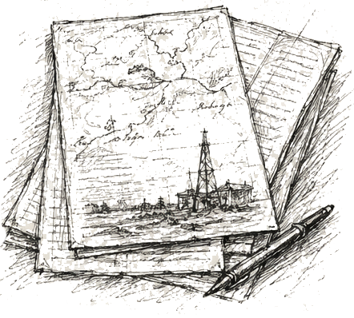
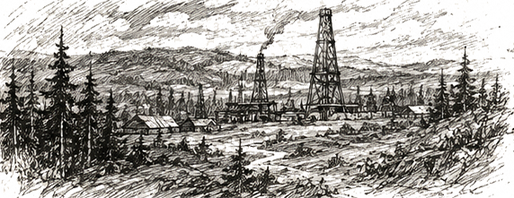

Naturhistorische und geognostische Beobachtungen, angestellt während einer Reise durch das europäische Russland
Dr. Johann Krause, Doctor der Naturgeschichte
Entsandt von der Freiberger Bergakademie, mit Empfehlungsschreiben der Kaiserlichen Akademie der Wissenschaften zu St. Petersburg.
Anno 1835

Nr. 12. Eine Krähe und ein Hofhund, eine Viertelwerst voneinander entfernt, bewegten sich auf denselben Punkt am Rande des Reviers zu. Ich folgte beiden. Die Wege trafen sich. Eine höchst ungewöhnliche Sache.

Nr. 19. Die Tiere betrachten die Menschen verschieden: die einen scheinen sie zu studieren, die anderen bemerken sie überhaupt nicht. Ich fertigte ein Verzeichnis jener Personen an, denen sich die Kreaturen bereitwillig nähern. Eine Regel finde ich nicht – doch vorhanden ist sie gewiss.
Nr. 27. Kreaturen verschiedener Gattungen handeln übereinstimmend, wie von einer einzigen Absicht bewegt. Weder Furcht noch Hunger noch Brunft erklären dies. Sie fressen nicht, sie spielen nicht. Sie warten.

Nr. 34. In dem Revier, das die Leute Wedmina Balka nennen (dt. etwa: Hexenschlucht), zeigt sich nachts ein gleichmässiger, azurblauer Schein, begleitet von anhaltendem Dröhnen. Die Quelle konnte ich nicht ermitteln: näher heranzukommen gelang nicht – die Gegenwart von Wölfen verriet sich durch deren Geheul; die Hunde, die mich begleiteten, legten sich zu Boden und gingen nicht weiter.

(am Rand, mit anderer Tinte, eigene Rubrik Antropologia domestica – Beobachtungen über die Sitten des hiesigen Landadels): Die hiesigen Gutsherren empfangen den Gast stets auf dieselbe Weise – mit Tee, Gesprächen über die Ernteaussichten und Klagen über den Nachbarn; von dem Gegenstand, der sie eigentlich beschäftigt, kein Wort, ehe nicht die dritte Tasse geleert ist. Löblich: eine Zurückhaltung, die eines Diplomaten würdig wäre – eine solche habe ich nicht immer bei Diplomaten selbst angetroffen.


Nr. 38. Casus singularis: kein kleines Tier, sondern ein Mensch. Der Bauer Dimitri, bis zur Besinnungslosigkeit betrunken, verbrachte die Nacht im Wolchi Log (Wolfsschlucht). Am Morgen körperlich gesund, doch verändert: der Blick leer, der Gesichtsausdruck beständig sanft-selig, an die Nacht erinnert er sich an nichts. Er ging über den Hof in regelmässigen Bahnen, gleichsam nach Figuren – ähnlich den Beobachtungen Nr. 12–27 an Tieren. Nach einem Tag verschwand es spurlos. Ich ziehe keinen Schluss: die Medizin ist nicht mein Fach. Ich vermerke nur die Übereinstimmung: dasselbe Revier – und die Veränderung trat nach einer Bewusstlosigkeit darin ein.


Das Flözausgehende auf den Ländereien des S. – das reichste, das ich im europäischen Russland gesehen habe. Die Lagerstätte liegt flach, die Ölqualität ist hoch; die Konzession amortisiert sich in drei Jahren. An die Direktion der Compagnie: Ich empfehle dringend den Erwerb der Rechte, ehe der Ort bekannt wird. Der hiesige Fabrikant ahnt den wahren Wert nicht.
